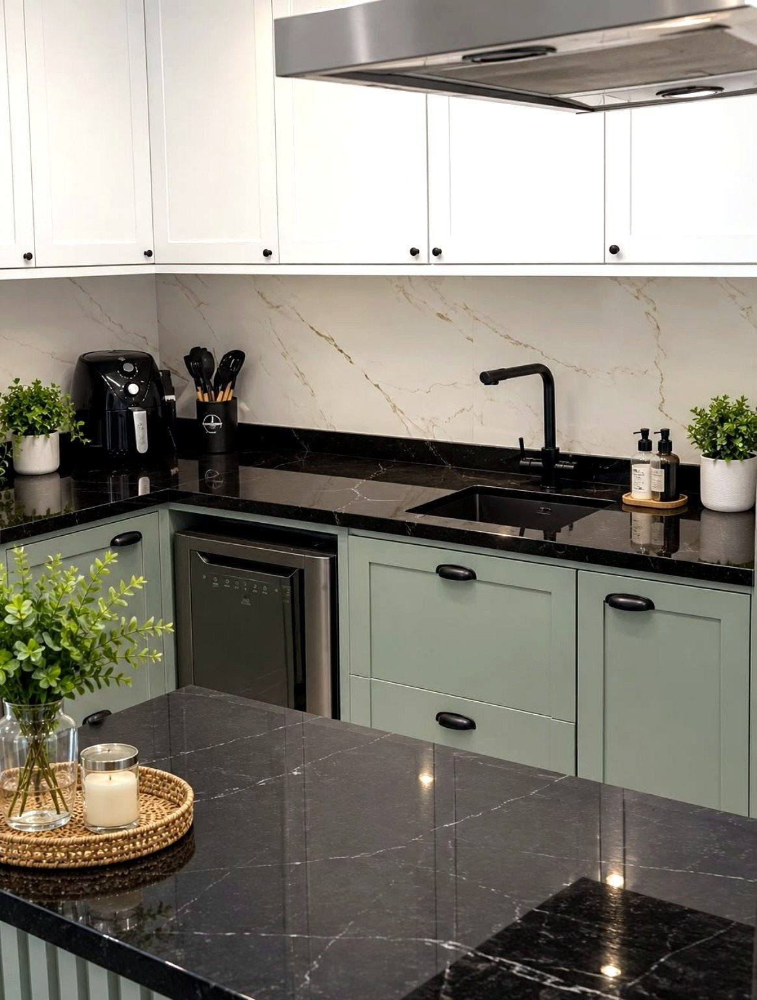
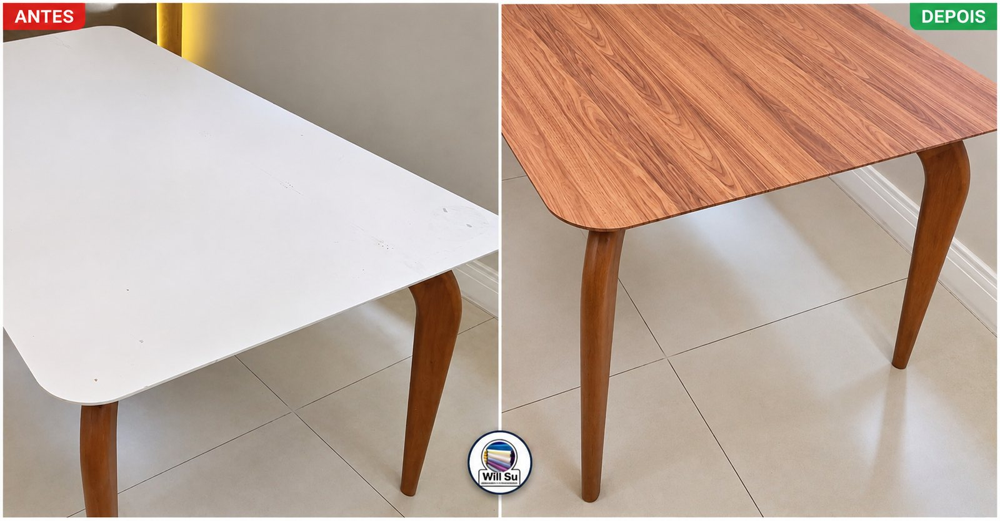
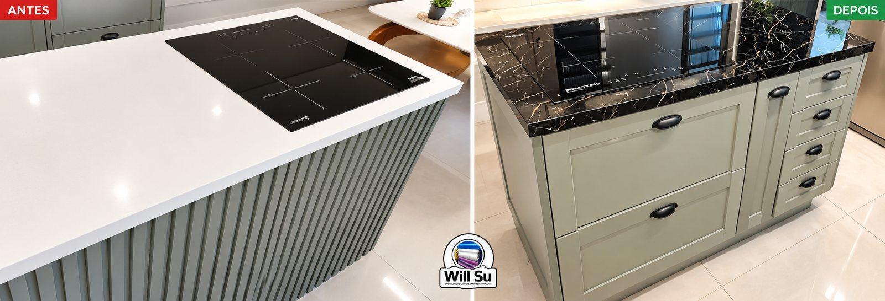
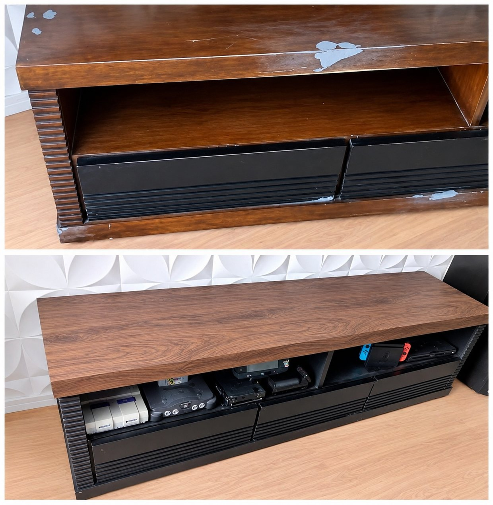

EM DESTAQUE
Cozinhas e armários planejados
Portas, frentes e painéis renovados com novas cores e texturas, preservando a estrutura existente quando ela está em boas condições.
WILLSU
Revitalização, Restauração e Envelopamento
Revitalização e restauração de cozinhas, armários planejados, bancadas, racks, painéis de TV, guarda-roupas e mobiliário sob medida.

A Willsu é especializada em revitalização, restauração e envelopamento de móveis e ambientes. Avaliamos cada projeto, orientamos a escolha dos materiais e executamos com atenção aos detalhes.
Atendemos São Paulo, Grande São Paulo, Jundiaí e Mogi das Cruzes.
Serviços
Vantagens
Nova aparência para os móveis que você já tem.
Pode custar menos do que trocar todo o mobiliário.
Novas cores e acabamentos para o ambiente.
Cores, texturas e marcas à sua escolha.
Em muitos casos, sem reforma nem demolição.
Um ambiente mais moderno e harmonioso.
Estrutura em bom estado é mantida; renovamos o acabamento.
Nem todo móvel pode ser envelopado: depende da superfície, da estrutura e do material. Por isso, todo projeto começa com uma avaliação.
Porque renovar um ambiente exige mais do que escolher uma nova cor ou aplicar um revestimento. Exige conhecimento, cuidado, planejamento e atenção aos detalhes.
Cada projeto começa com uma avaliação cuidadosa das condições dos móveis e das suas necessidades. Levamos até você catálogos com diferentes materiais, marcas, cores e acabamentos, para que possa sentir as texturas, comparar e escolher com segurança.
Orientamos cada etapa, da escolha do acabamento à execução, buscando um resultado harmonioso e adequado ao seu ambiente — valorizando sua estrutura, seu espaço e seu investimento.
Não queremos apenas mudar a aparência dos seus móveis. Queremos ajudar você a renovar a maneira como vive e aproveita seus ambientes.
Projetos realizados
Compare as transformações. Cada projeto mostra a mesma peça antes e depois, com os serviços executados.
PROJETO 01 · ARMÁRIO AÉREO
Armário aéreo de 4 portas com acabamento em madeira escura, renovado em cinza claro fosco.
PROJETO 02 · COZINHA
Bancada original branca transformada em acabamento marmorizado com veios. Armários inferiores, originalmente brancos, revitalizados em verde sálvia. Duas técnicas no mesmo ambiente — e uma cozinha renovada sem substituir os móveis.
Serviços: bancada em acabamento marmorizado · revitalização dos armários inferiores
PROJETO 03 · ARMÁRIOS DE COZINHA
Armários brancos revitalizados em tom cinza, com uma estética mais contemporânea — sem substituir o mobiliário.
Serviço: revitalização e envelopamento de armários de cozinha · adesivo espelhado nas portas da cristaleira

PROJETO 04 · RESTAURAÇÃO DE MOBILIÁRIO
Essa mesa apresentava diversas marcas de uso, riscos e desgaste em sua superfície branca.
Antes da aplicação do revestimento vinílico, realizamos a restauração da superfície, eliminando os riscos e as marcas de uso. Também fizemos o reforço da mesa e a preparação necessária para receber o novo acabamento.
Na etapa final, aplicamos o revestimento vinílico com acabamento amadeirado, transformando completamente a aparência do móvel.
O resultado é uma mesa restaurada, reforçada e com uma nova identidade visual, valorizando a estrutura existente e prolongando sua utilização.
Etapas do serviço

PROJETO 05 · BANCADAS E ILHAS
A ilha desta cozinha possuía uma bancada com acabamento branco. Para renovar o ambiente e trazer mais sofisticação, realizamos a transformação da superfície com revestimento vinílico de acabamento marmorizado preto, com veios claros e detalhes dourados.
A nova aparência criou um contraste elegante com os armários em verde sálvia, valorizando a ilha e harmonizando o conjunto da cozinha.
Uma solução de revitalização que transforma visualmente a bancada existente, sem a necessidade de substituí-la.
Serviço: envelopamento e revitalização de bancadas e ilhas de cozinha

ANTES DEPOISPROJETO 06 · RACKS
O móvel apresentava desgaste, riscos e partes descascadas. Realizamos a renovação do acabamento superior com revestimento amadeirado, valorizando o visual do rack e preservando sua estrutura original.
Resultado: um móvel renovado, com aparência mais moderna e elegante.
PROJETO 07 · CRISTALEIRA
As portas de vidro, que deixavam todo o conteúdo à mostra, receberam adesivo espelhado. A estrutura da cristaleira foi renovada em cinza, no mesmo projeto dos armários da cozinha (projeto 03).
Serviço: aplicação de adesivo espelhado nas portas de vidro · revitalização em cinza
PROJETO 08 · ARMÁRIOS DE COZINHA
As bordas verdes deixavam a cozinha com aparência datada. Com o acabamento todo em branco, o conjunto ficou contínuo, leve e atual — sem trocar os móveis.
Avaliações
“Contratei o serviço para adesivar a minha cozinha e a experiência foi impecável do início ao fim! A Sra. Suely e o Sr. Willians [e sua equipe] fazem o trabalho com muita delicadeza, cuidado e carinho. Super atenciosos desde o primeiro orçamento até a conclusão de cada detalhe. O resultado ficou maravilhoso e eu simplesmente adorei minha cozinha nova! Recomendo de olhos fechados.”
Nosso processo
Visita técnica para conferir a superfície, a estrutura e as medidas dos móveis.
Você escolhe cores, texturas e acabamentos com os catálogos em mãos.
Orçamento detalhado e definição das etapas e da data de execução.
Preparação das superfícies e aplicação com acabamento cuidadoso.
Atendimento personalizado
Na visita técnica, levamos até você nossos catálogos com diferentes materiais, acabamentos e marcas. Você conhece as opções de perto, sente as texturas e escolhe a cor ideal — no seu próprio ambiente, com a luz da sua casa.
Levados até a sua casa, sem você precisar sair.
Diferentes marcas disponíveis para comparar.
Vistas ao lado do seu piso, parede e bancada.
Madeiras, foscos e acabamentos para sentir com as mãos.
Antes do orçamento
Realizamos visitas técnicas para avaliar as condições do ambiente, conferir medidas, analisar materiais e identificar a melhor solução para o seu projeto.
Como funciona a cobrança da visita:
APROVOU O ORÇAMENTO E FECHOU O SERVIÇO
Visita gratuita
Você não paga nada pela visita técnica.
NÃO CONTRATOU O SERVIÇO
Visita cobrada
A visita técnica é cobrada. O valor é informado pelo WhatsApp antes de agendar.
Envie fotos dos seus móveis pelo WhatsApp e conte o que deseja renovar. Parcelamento em até 12x, com acréscimo da taxa da operadora.
SOLICITE SEU PROJETOTambém trabalhamos com revitalização e envelopamento de eletrodomésticos.
Conheça nossos serviços para eletrodomésticos